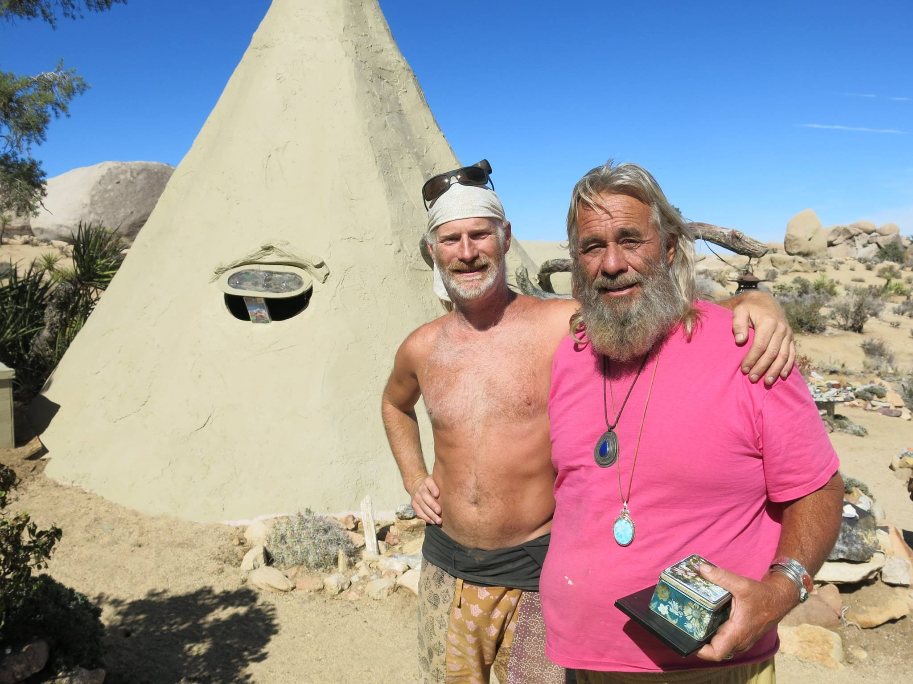
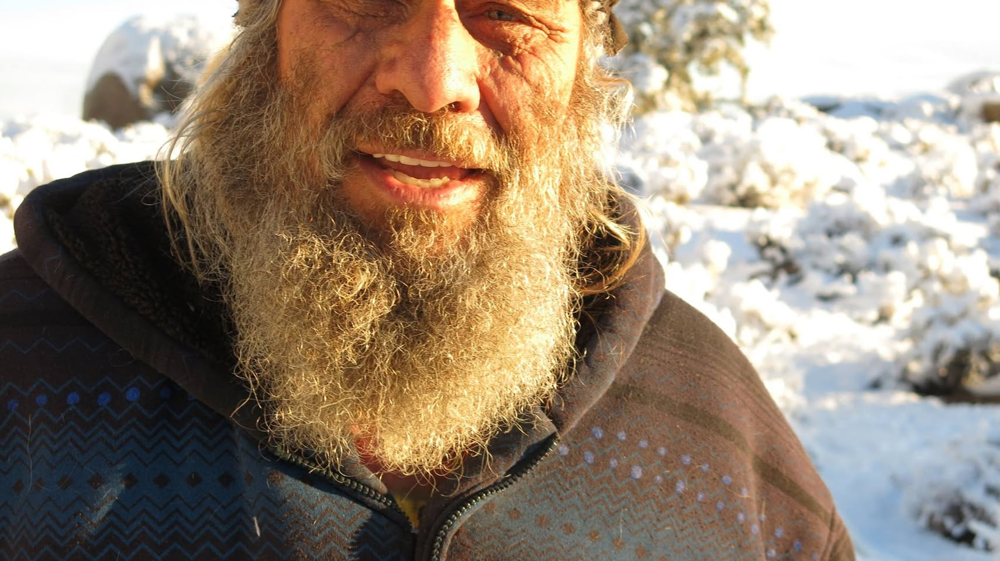

Simplicity
A simpler way of living.
A Life of Simplicity & Welcome
Founder of Boulder Gardens Sanctuary
A seeker, builder, artist, and friend who made a place where people could live close to the desert—and where all were welcome.
About the photograph: Robert Redecker, pictured here with Garth, lived at Boulder Gardens for about a year a decade ago and has now returned for nearly another year. Robert Peterson is a different person; after Garth’s death, he became the owner of Boulder Gardens.

Founder & Keeper of the Garden
Garth Bowles founded Boulder Gardens and shaped it as a spiritual, off-grid community in the high desert west of Pioneertown. Through simple living, land stewardship, generosity, and an open heart, he created a place of beauty and belonging.
Garth single-handedly created Boulder Gardens, and yet he did not do it alone. Friends, family, visitors, and community members lent their labor, intelligence, spirit, financial support, and love. The sanctuary grew through those relationships.
A Life in Service
Garth was born October 25 to Clyde Henry Bowles and Verda Roberta Hawker. His middle name, meaning “keeper of the garden,” became the name he used.
He graduated from Ramona High School and was recognized for his artwork, including first place at the Inland Art Festival.
Garth served an LDS mission in Grimsby. The experience led him toward a more personal and esoteric spiritual life.
In his late thirties, Garth gave away all his possessions and joined the Christ Family. For four years he traveled simply, preached, and walked much of Mexico.
With help from his parents, Garth acquired undeveloped desert land and began turning his dream of a spiritual, off-grid community into a lived place.
He built Boulder Gardens into a sanctuary centered on hospitality, minimal-impact living, spiritual openness, and care for the desert.
Garth lived openly as a gay man and shared his life authentically. His own openness was part of the welcome he offered others.
After Garth’s death at Boulder Gardens on July 22, Robert Peterson became the owner of the land and assumed responsibility for its continuing stewardship.

His Legacy Lives On
Garth’s legacy is found in more than the structures he built. It lives in the continuing care of the land, in the people drawn here from many walks of life, and in the belief that spiritual life can remain open rather than prescribed.
A simpler way of living.
Caring for the desert.
People from all walks of life.
All are welcome.
A Lasting Sanctuary
Today, Boulder Gardens remains a place of peace, inspiration, renewal, and experiment. Garth’s spirit lives on in the land, in the community, and in those who continue the work of caring for both.
“The desert still welcomes.
His spirit is still here.”